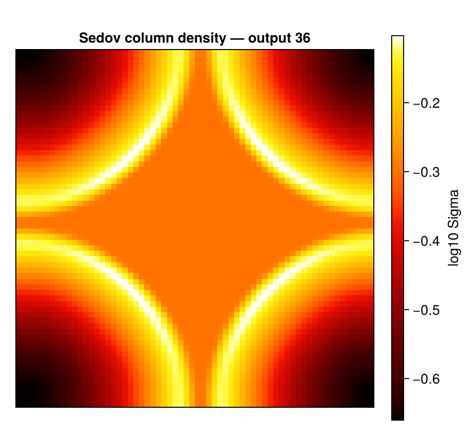

Movies (getmovie / savemovie)
This page is also an executable Jupyter notebook: open / download movie.ipynb. The notebooks run end-to-end and double as part of Mera's test suite.
getmovie projects a quantity for every output of a simulation and collects the maps into the frames of a movie; savemovie writes them to an animated GIF. It builds on the same machinery as timeseries (one snapshot resident at a time, RAM-safe) and the projection engine. Down a box axis the view is fixed by construction; off axis it is not, and fov is what makes it so (see below).

This notebook runs on the timeseries_sedov3d test run (a 3-D Sedov blast, 13 outputs). All file outputs are written to a temporary directory.
A point explosion set off in one corner cell of a small periodic box. The shell expands, wraps through the faces and arrives from every side, so it appears as four quarter arcs closing in. The movie stops before the wrapped copies collide.
# Example-data root. Point this at your own simulation folder, or set the
# MERA_EXAMPLES environment variable; every path below is built from it.
MERA_EXAMPLES = get(ENV, "MERA_EXAMPLES", "/Volumes/FASTStorage/Simulations/Mera-Tests");
using Mera
run = joinpath(MERA_EXAMPLES, "RAMSES/timeseries_sedov3d")
tmp = mktempdir()
println("temp output dir : ", tmp)
# one column-density frame per output (numeric maps, no files written).
# `outputs` picks a subset; leave it out and every output in the run is used.
m = getmovie(run, :sd; outputs=1:36, res=256)
println("frames : ", length(m.frames))
println("frame size : ", size(m.frames[1]))
println("output numbers : ", m.outputs)*__ __ _______ ______ _______
| |_| | | _ | | _ |
| | ___| | || | |_| |
| | |___| |_||_| |
| | ___| __ | |
| ||_|| | |___| | | | _ |
|_| |_|_______|___| |_|__| |__|
Mera v1.8.0 | Julia 1.12.7 | 4 threads
temp output dir : /var/folders/k5/gw4hqgwj5_qf8sljz0091x1m0000gp/T/jl_IvvUEF
getmovie: 36 frame(s) of :sd from "/Volumes/FASTStorage/Simulations/Mera-Tests/RAMSES/timeseries_sedov3d"
[1/36] output 00001
[2/36] output 00002
[3/36] output 00003
[4/36] output 00004
[5/36] output 00005
[6/36] output 00006
[7/36] output 00007
[8/36] output 00008
[9/36] output 00009
[10/36] output 00010
[11/36] output 00011
[12/36] output 00012
[13/36] output 00013
[14/36] output 00014
[15/36] output 00015
[16/36] output 00016
[17/36] output 00017
[18/36] output 00018
[19/36] output 00019
[20/36] output 00020
[21/36] output 00021
[22/36] output 00022
[23/36] output 00023
[24/36] output 00024
[25/36] output 00025
[26/36] output 00026
[27/36] output 00027
[28/36] output 00028
[29/36] output 00029
[30/36] output 00030
[31/36] output 00031
[32/36] output 00032
[33/36] output 00033
[34/36] output 00034
[35/36] output 00035
[36/36] output 00036
frames : 36
frame size : (256, 256)
output numbers : [1, 2, 3, 4, 5, 6, 7, 8, 9, 10, 11, 12, 13, 14, 15, 16, 17, 18, 19, 20, 21, 22, 23, 24, 25, 26, 27, 28, 29, 30, 31, 32, 33, 34, 35, 36]How it works (no scratch images)
The pipeline is simulation outputs → in-memory numeric maps → one GIF, it does not write a folder of PNGs and stitch them, and it does not read existing image files:
getmovieloops the outputs, loading one snapshot at a time (released before the next, liketimeseries), andprojections each into an in-memory 2-D numeric array (Matrix{Float64}). These accumulate inm.frames, no files are written.savemovietakes those numeric frames, applies the log/colormap/normalisation, and writes a single animated GIF in oneFileIO.savecall (using the bundled FileIO/Images, no extra package). No per-frame temp files.
The frames stay numeric, so you can post-process them or render them yourself. If you do want the individual images on disk, ask for them, savemovie(...; save_frames="dir/") writes each rendered frame as a PNG (see Scratch frames), and moviefromframes goes the other way, building a movie from images already on disk.
Orientation: off-axis movies
getmovie is axis-aligned by default (direction=:z), and every off-axis control that projection offers works here too:
# a line of sight from the auto-frame (face-on / edge-on)
ref = gethydro(getinfo(1, "/data/sim"))
fr = face_on(ref)
m = getmovie("/data/sim", :sd; los=fr.los, up=fr.up, center=fr.center, range_unit=fr.center_unit)
# by viewing angles
m = getmovie("/data/sim", :sd; inclination=60, azimuth=30) # degrees by defaultDown a box axis the window is fixed by construction. Off axis it is not: the projection fits its window to the rotated data, and that footprint changes from snapshot to snapshot. The object then appears to zoom, only the first frame's extent is recorded, and if two snapshots produce different pixel dimensions the encode stops outright.
Pass fov/fov_unit (with aperture=:circle|:square) to select a fixed sphere about center. Every frame then shares one window, which is what rotation_sequence has always done for its angle sweeps.
m = getmovie("/data/sim", :sd; inclination=60, axis=:angmom,
fov=15, fov_unit=:kpc, aperture=:square, pxsize=[0.5, :kpc])axis=:angmom deserves the same caution. It re-derives the orientation from each snapshot's own angular momentum, so if the disc's spin drifts, the camera drifts with it and the series tumbles. For a steady series, measure the orientation once and freeze it as los=.
res, pxsize, lmax and the xrange/yrange/zrange region keywords cut the cost and memory of each frame. outputs selects which snapshots (:all, a range, or a vector), and mera_files=true reads output_*.jld2 mera files instead of RAMSES outputs, exactly as in timeseries.
Moving the camera on purpose
The frames so far differ only in time. Two keywords add camera motion, and they make different movies:
| between frames, what changes | keyword | frames |
|---|---|---|
| time only | neither | one per output |
| a full turn at each snapshot | angles | outputs x angles |
| time and angle together | sweep | one per output |
Neither interpolates. Every frame is a real projection from a real viewpoint, so nothing in the result is invented.
angle_var chooses which angle they drive: :azimuth (default), :inclination or :position_angle. Driving an angle you also set explicitly is an error rather than a silent override.
# orbit, then step time: a turn at every snapshot
orbit = getmovie(run, :sd; angles=0:120:240, fov=0.3, fov_unit=:standard,
aperture=:square, inclination=50, res=64, verbose=false)
println("angles : ", length(orbit.frames), " frames from ",
length(unique(orbit.outputs)), " outputs")
# orbit while time passes: one frame per snapshot, at a moving angle
turning = getmovie(run, :sd; sweep=(0, 180), fov=0.3, fov_unit=:standard,
aperture=:square, inclination=50, res=64, verbose=false)
println("sweep : ", length(turning.frames), " frames, each a different time and angle")
println("every frame the same size: ",
all(size(f) == size(orbit.frames[1]) for f in orbit.frames))angles : 129 frames from 43 outputs
sweep : 43 frames, each a different time and angle
every frame the same size: trueThe same call works on particles. The weighting differs between the two paths (particles take a bare Symbol where hydro takes a [quantity, unit] pair), which getmovie now handles for you.
The Sedov run above carries no particles, so this uses a different fixture: a small gravity-plus-particle series.
prun = joinpath(MERA_EXAMPLES, "RAMSES-PUBLIC/sedov3d_grav_part")
pm = getmovie(prun, :sd; datatype=:particles, res=64, verbose=false)
println("particle frames : ", length(pm.frames), " size ", size(pm.frames[1]))
println("outputs : ", pm.outputs)particle frames : 7 size (64, 64)
outputs : [1, 2, 3, 4, 5, 6, 7]Save to a GIF
savemovie takes the numeric frames, applies the log/colormap/normalisation, and writes a single animated GIF. tags=:output burns the output number onto each frame.
gif = joinpath(tmp, "density.gif")
savemovie(m, gif; tags=:output)
println("wrote GIF : ", gif, " (", filesize(gif), " bytes)") frame 1: output 00001
frame 2: output 00002
frame 3: output 00003
frame 4: output 00004
frame 5: output 00005
frame 6: output 00006
frame 7: output 00007
frame 8: output 00008
frame 9: output 00009
frame 10: output 00010
frame 11: output 00011
frame 12: output 00012
frame 13: output 00013
frame 14: output 00014
frame 15: output 00015
frame 16: output 00016
frame 17: output 00017
frame 18: output 00018
frame 19: output 00019
frame 20: output 00020
frame 21: output 00021
frame 22: output 00022
frame 23: output 00023
frame 24: output 00024
frame 25: output 00025
frame 26: output 00026
frame 27: output 00027
frame 28: output 00028
frame 29: output 00029
frame 30: output 00030
frame 31: output 00031
frame 32: output 00032
frame 33: output 00033
frame 34: output 00034
frame 35: output 00035
frame 36: output 00036
savemovie: wrote 36 frames → /var/folders/k5/gw4hqgwj5_qf8sljz0091x1m0000gp/T/jl_IvvUEF/density.gif
wrote GIF : /var/folders/k5/gw4hqgwj5_qf8sljz0091x1m0000gp/T/jl_IvvUEF/density.gif (466105 bytes)Saving: colormap, scaling, steady brightness
gif2 = joinpath(tmp, "density_gray.gif")
savemovie(m, gif2;
colormap = :gray,
log = true,
colorrange = :global,
clip = (0.0, 0.999),
tags = :time, # "t = … Myr" on each frame
fps = 8)
println("wrote : ", gif2, " (", filesize(gif2), " bytes)") frame 1: t=0.0 Myr
frame 2: t=6.025e-17 Myr
frame 3: t=1.212e-16 Myr
frame 4: t=1.845e-16 Myr
frame 5: t=2.415e-16 Myr
frame 6: t=3.03e-16 Myr
frame 7: t=3.633e-16 Myr
frame 8: t=4.268e-16 Myr
frame 9: t=4.82e-16 Myr
frame 10: t=5.448e-16 Myr
frame 11: t=6.039e-16 Myr
frame 12: t=6.646e-16 Myr
frame 13: t=7.27e-16 Myr
frame 14: t=7.845e-16 Myr
frame 15: t=8.432e-16 Myr
frame 16: t=9.031e-16 Myr
frame 17: t=9.642e-16 Myr
frame 18: t=1.026e-15 Myr
frame 19: t=1.09e-15 Myr
frame 20: t=1.147e-15 Myr
frame 21: t=1.204e-15 Myr
frame 22: t=1.27e-15 Myr
frame 23: t=1.33e-15 Myr
frame 24: t=1.39e-15 Myr
frame 25: t=1.451e-15 Myr
frame 26: t=1.513e-15 Myr
frame 27: t=1.567e-15 Myr
frame 28: t=1.63e-15 Myr
frame 29: t=1.686e-15 Myr
frame 30: t=1.75e-15 Myr
frame 31: t=1.807e-15 Myr
frame 32: t=1.872e-15 Myr
frame 33: t=1.93e-15 Myr
frame 34: t=1.988e-15 Myr
frame 35: t=2.055e-15 Myr
frame 36: t=2.115e-15 Myr
savemovie: wrote 36 frames → /var/folders/k5/gw4hqgwj5_qf8sljz0091x1m0000gp/T/jl_IvvUEF/density_gray.gif
wrote : /var/folders/k5/gw4hqgwj5_qf8sljz0091x1m0000gp/T/jl_IvvUEF/density_gray.gif (437733 bytes)colorrange=:global(default) computes a single range over all frames, so the movie doesn't flicker as the peak grows. Use:perframeto stretch each frame independently, or pass an explicit(lo, hi)(in log space whenlog=true).colormapis:fireor:grayout of the box (no colour-package dependency), or any function mappingt∈[0,1]to an(r, g, b)tuple, e.g. plug in aColorSchemes/Makie colormap if you have one loaded.
Tags: a timestamp or label on each frame
Pass tags to label every frame. The labels are printed as the movie is written and, with annotate=true (the default), burned onto the frames with a small built-in bitmap font (top-left, no font dependency).
tags accepts:
:time→ the frame's physical time and unit;:output→ its output number;- a vector of strings (one per frame), any custom caption you like;
- a function
k -> String(frame index → label), e.g.k -> "z = $(redshifts[k])"; - a tuple of any of the above to stack multiple lines, e.g.
tags=(:output, :time).
Control how the labels look, all optional, with sensible defaults:
| keyword | default | options |
|---|---|---|
tag_scale | :auto | :auto (scales with the frame) or an integer font size |
tag_position | :topleft | :topleft, :topright, :bottomleft, :bottomright, or (row, col) |
tag_color | :white | :white, :yellow, :red, :cyan, :green, :black, an RGB, or (r,g,b) |
gif3 = joinpath(tmp, "density_tagged.gif")
captions = ["frame $(k)/$(length(m.frames))" for k in 1:length(m.frames)]
savemovie(m, gif3;
tags = (:output, :time), # two stacked lines
tag_position = :bottomright,
tag_color = :yellow)
println("two-line tags : ", basename(gif3))
gif4 = joinpath(tmp, "density_custom.gif")
savemovie(m, gif4; tags = captions) # custom per-frame strings
println("custom tags : ", basename(gif4)) frame 1: output 00001 | t=0.0 Myr
frame 2: output 00002 | t=6.025e-17 Myr
frame 3: output 00003 | t=1.212e-16 Myr
frame 4: output 00004 | t=1.845e-16 Myr
frame 5: output 00005 | t=2.415e-16 Myr
frame 6: output 00006 | t=3.03e-16 Myr
frame 7: output 00007 | t=3.633e-16 Myr
frame 8: output 00008 | t=4.268e-16 Myr
frame 9: output 00009 | t=4.82e-16 Myr
frame 10: output 00010 | t=5.448e-16 Myr
frame 11: output 00011 | t=6.039e-16 Myr
frame 12: output 00012 | t=6.646e-16 Myr
frame 13: output 00013 | t=7.27e-16 Myr
frame 14: output 00014 | t=7.845e-16 Myr
frame 15: output 00015 | t=8.432e-16 Myr
frame 16: output 00016 | t=9.031e-16 Myr
frame 17: output 00017 | t=9.642e-16 Myr
frame 18: output 00018 | t=1.026e-15 Myr
frame 19: output 00019 | t=1.09e-15 Myr
frame 20: output 00020 | t=1.147e-15 Myr
frame 21: output 00021 | t=1.204e-15 Myr
frame 22: output 00022 | t=1.27e-15 Myr
frame 23: output 00023 | t=1.33e-15 Myr
frame 24: output 00024 | t=1.39e-15 Myr
frame 25: output 00025 | t=1.451e-15 Myr
frame 26: output 00026 | t=1.513e-15 Myr
frame 27: output 00027 | t=1.567e-15 Myr
frame 28: output 00028 | t=1.63e-15 Myr
frame 29: output 00029 | t=1.686e-15 Myr
frame 30: output 00030 | t=1.75e-15 Myr
frame 31: output 00031 | t=1.807e-15 Myr
frame 32: output 00032 | t=1.872e-15 Myr
frame 33: output 00033 | t=1.93e-15 Myr
frame 34: output 00034 | t=1.988e-15 Myr
frame 35: output 00035 | t=2.055e-15 Myr
frame 36: output 00036 | t=2.115e-15 Myr
savemovie: wrote 36 frames → /var/folders/k5/gw4hqgwj5_qf8sljz0091x1m0000gp/T/jl_IvvUEF/density_tagged.gif
two-line tags : density_tagged.gif
frame 1: frame 1/36
frame 2: frame 2/36
frame 3: frame 3/36
frame 4: frame 4/36
frame 5: frame 5/36
frame 6: frame 6/36
frame 7: frame 7/36
frame 8: frame 8/36
frame 9: frame 9/36
frame 10: frame 10/36
frame 11: frame 11/36
frame 12: frame 12/36
frame 13: frame 13/36
frame 14: frame 14/36
frame 15: frame 15/36
frame 16: frame 16/36
frame 17: frame 17/36
frame 18: frame 18/36
frame 19: frame 19/36
frame 20: frame 20/36
frame 21: frame 21/36
frame 22: frame 22/36
frame 23: frame 23/36
frame 24: frame 24/36
frame 25: frame 25/36
frame 26: frame 26/36
frame 27: frame 27/36
frame 28: frame 28/36
frame 29: frame 29/36
frame 30: frame 30/36
frame 31: frame 31/36
frame 32: frame 32/36
frame 33: frame 33/36
frame 34: frame 34/36
frame 35: frame 35/36
frame 36: frame 36/36
savemovie: wrote 36 frames → /var/folders/k5/gw4hqgwj5_qf8sljz0091x1m0000gp/T/jl_IvvUEF/density_custom.gif
custom tags : density_custom.gifSet annotate=false to print the labels without drawing them on the frames.
Save and reload the movie object
Computing the frames (especially at high resolution over many outputs) is the expensive part. Persist the MeraMovie to a JLD2 file, the same Julia-native way savemap stores a map, and reload it later with loadmovie, without re-running getmovie:
jld = joinpath(tmp, "density.jld2")
savemovie(m, jld) # .jld2 ⇒ persists the object
m2 = loadmovie(jld)
println("reloaded frames: ", length(m2.frames), " (identical: ", length(m2.frames) == length(m.frames), ")")Saved MeraMovie (36 frames) → /var/folders/k5/gw4hqgwj5_qf8sljz0091x1m0000gp/T/jl_IvvUEF/density.jld2
Loaded MeraMovie (36 frames) ← /var/folders/k5/gw4hqgwj5_qf8sljz0091x1m0000gp/T/jl_IvvUEF/density.jld2
reloaded frames: 36 (identical: true)savemovie switches on the extension: .gif encodes a movie, .jld2 persists the object.
Scratch frames, keep the PNGs
Set save_frames to a directory and savemovie also writes every rendered frame as frame_00001.png, frame_00002.png, … there (the GIF is still written too):
savemovie(m, "density.gif"; tags=:output, save_frames="frames/")
# frames/frame_00001.png … frames/frame_00013.pngBuild a movie from existing images
The complement: moviefromframes assembles a GIF from image files already on disk, the PNGs from save_frames, or frames you rendered yourself:
moviefromframes("frames/", "movie.gif"; fps=12) # sorts by name, stacks, encodesThis is the "use existing images to make a movie" path, so you can render publication-quality frames with CairoMakie (axes, a colourbar, your own annotations), save them as PNGs, and turn them into a GIF, or feed them to ffmpeg for an MP4:
using CairoMakie
framedir = joinpath(tmp, "frames"); mkpath(framedir)
for (k, A) in enumerate(m.frames)
f = Figure(size = (320, 300))
ax = Axis(f[1,1]; aspect = DataAspect(),
title = "t = $(round(m.times[k], digits=3))")
hidedecorations!(ax)
heatmap!(ax, log10.(max.(A, 1e-30)); colormap = :inferno)
save(joinpath(framedir, "frame_$(lpad(k,4,'0')).png"), f)
end
out_gif = joinpath(tmp, "from_frames.gif")
moviefromframes(framedir, out_gif; fps = 10)
println("assembled : ", out_gif, " (", filesize(out_gif), " bytes)")moviefromframes: 36 image(s) from /var/folders/k5/gw4hqgwj5_qf8sljz0091x1m0000gp/T/jl_IvvUEF/frames → /var/folders/k5/gw4hqgwj5_qf8sljz0091x1m0000gp/T/jl_IvvUEF/from_frames.gif
assembled : /var/folders/k5/gw4hqgwj5_qf8sljz0091x1m0000gp/T/jl_IvvUEF/from_frames.gif (1059995 bytes)…or feed the PNGs to ffmpeg for an MP4:
ffmpeg -framerate 10 -i frames/frame_%04d.png -pix_fmt yuv420p movie.mp4A single rendered frame
For the notebook output we show the last frame (the strongest shock) as one CairoMakie figure.
A = m.frames[end]
fig = Figure(size = (480, 440))
ax = Axis(fig[1,1]; aspect = DataAspect(),
title = "Sedov column density — output $(m.outputs[end])")
hidedecorations!(ax)
hm = heatmap!(ax, log10.(max.(A, 1e-30)); colormap = :fire)
Colorbar(fig[1,2], hm; label = "log10 Sigma")
fig
See also
timeseries, the same outputs/loading machinery, reducing each snapshot to a row instead of a frame.projection, the per-frame projection engine and its view keywords.- Auto-Frame,
face_on/edge_onfor an oriented movie.